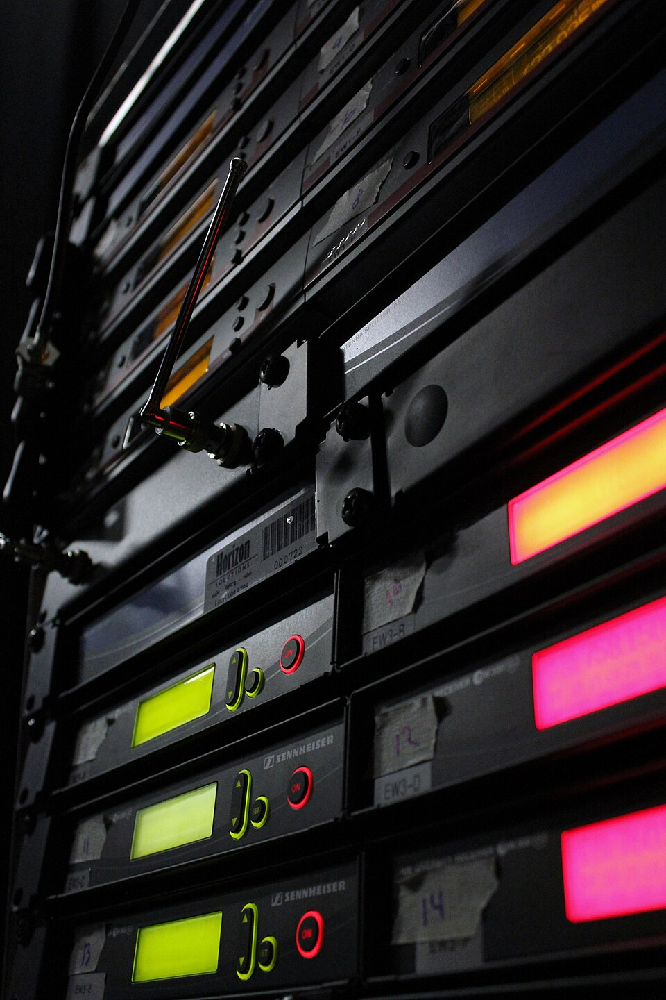

Wireless Mics & RF Coordination
8-Channel UHF Coordinator · 3rd-Order Intermod · TV Channels · Squelch Audio1 · The Link Is a UHF Radio Wave
A bodypack converts your mic audio onto an FM or digital carrier frequency inside the 470–608 MHz UHF TV band. Whip antennas perform best near a quarter wavelength — around 15 cm at 500 MHz.
Wavelength Calculator
2 · Why Separate Channels Still Collide (Intermodulation)
Every RF receiver front-end amplifier has a cubic nonlinearity (y = a₁x + a₂x² + a₃x³). Mixing transmitters on f₁ and f₂ creates phantom third-order frequencies you never dialed:
Spacing transmitters evenly is the worst trap: every carrier’s product lands smack on the next transmitter’s frequency. Look for the same nonlinear math in gain staging and Fourier distortion.
Intermod Hazard Scaling
3 · Cleanest Layout: A Golomb Ruler
Intermodulation hits a carrier only when two gaps match. A Golomb ruler places transmitters so every pair distance is unique — the highlighted row tracks your live mic count in the coordinator above:
| Mics | Golomb marks (× clearance) | Min. span | TV channels |
|---|
4 · Line of Sight, Diversity Receivers & Bodypack Hygiene
Human bodies, steel scenery, and brick walls block UHF radio waves. Test what happens when Performer B steps clear into sightline:
Diversity & Antenna Distribution
True diversity receivers compare two spaced antennas and switch instantaneously to avoid multipath dead spots. An antenna distribution box feeds one well-placed pair of antennas to up to 8 receivers cleanly.
Bodypack Placement & Sweat Protection
Salt water in stage sweat absorbs UHF RF and corrodes lav capsules. Mount packs inside a neoprene waist pouch or over dry fabric away from bare skin, keep the quarter-wave whip straight (never folded), and tie a loose strain-relief loop in the mic cable.
5 · Show-Day Setup Checklist & Bands
6 · Check Yourself
7 · Meet the Real Wireless Gear
Click either photo to enlarge it for class discussion.

